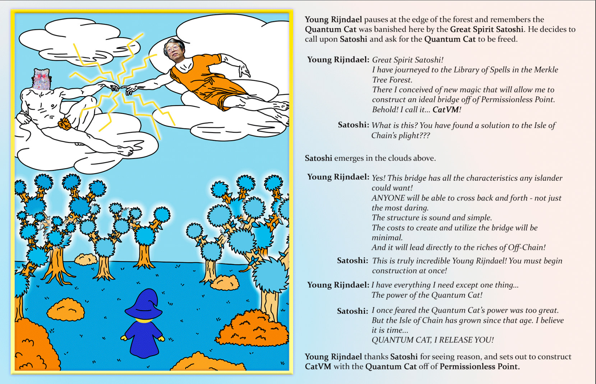

Meow
CatVM
THERE AND BACK AGAIN
What the team of @TaprootWizards and @QuantumCatsXYZ is cooking is the future, come I will explain why page 12 called by me the “Rebirth of a new CatVM era” is my favorite


